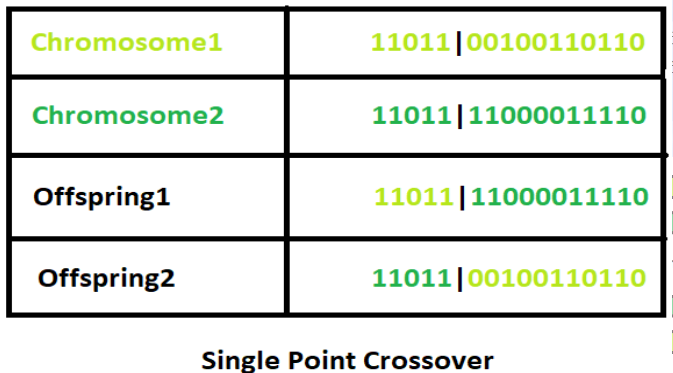
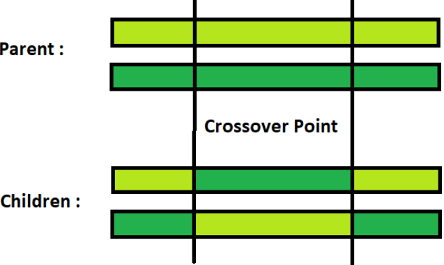
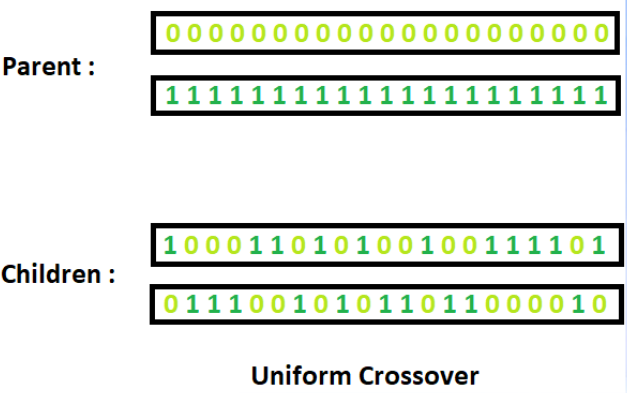

Как работает генетический алгоритм
Генетический алгоритм (ГА) — это алгоритм поиска и оптимизации, прообразом которого стал биологический принцип естественного отбора.
Первый этап
Создание популяции. В данном случае популяция — это не совокупность биологических особей, а множество возможных решений имеющейся проблемы, которые образуют пространство поиска (space search).
Второй этап
Подсчёт функции пригодности (приспособленности, fitness function).
Данная функция принимает на вводе потенциальное решение проблемы (candidate solution), а выдаёт значение, оценивающее его пригодность.
Алгоритм прекратит исполняться, если достигнуто ожидаемое оптимальное значение, если полученное значение больше не улучшается или по истечении заданного времени/количества итераций.
После остановки происходит выбор самой приспособленной хромосомы (по наибольшему значению функции).
Если же условие остановки не выполнено, то по результатам естественного отбора будет производиться селекция хромосом для производства потомков.
Третий этап
Cкрещивание (в русских источниках — «кроссинговер», реже «кроссовер») и мутация.
Скрещивание, мутация и селекция – это генетические операторы. Как и в природе, вероятность скрещивания на несколько порядков выше вероятности мутации.
Скрещивание поддерживает бесконечное разнообразие в популяции, это перераспределение генетического материала родителей, благодаря которому у потомков появляются новые сочетания генов.
В результате селекции отбираются самые приспособленные хромосомы — к ним и применяются эти генетические операторы.
Мутация — генетический оператор, который с некой вероятностью меняет один или несколько «генов» в случайных позициях «хромосомы».
Виды кроссинговеров
Одноточечный кроссинговер (single-point crossover): есть пара родительских хромосом с набором генов L, для них случайным образом выбирается так называемая точка скрещивания Px. К [1; Px] одной родительской хромосомы присоединяется [Px+1; L] другой, и получается первый потомок. Второй потомок получается также скрещиванием, но «в обратную сторону».
Двухточечный кроссинговер (two-point crossover): обмен генетическим материалом, (то есть, битами) происходит в двух точках скрещивания.
Однородный кроссинговер (uniform crossover): значение каждого бита в хромосоме потомка определяется согласно случайно сгенерированной маске кроссинговера. Если в маске стоит 0 – берется ген от первого родителя, если 1 – от второго.
